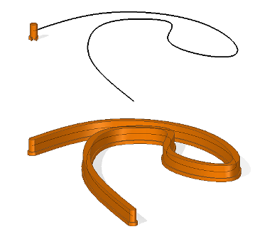
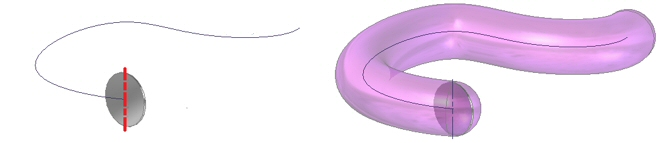
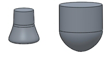
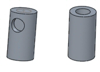
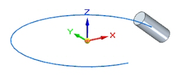
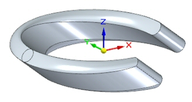
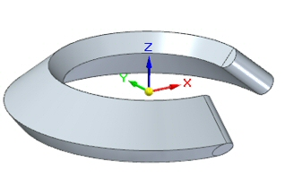

Solid Sweep Protrusion command
The Solid Sweep Protrusion command creates a solid body by moving a spinning revolved tool body along a path. The revolved tool body adds volume as it moves along the path.

Both 2D and 3D paths are valid. Unless the tool is placed on the path, or the Place tool on Path option is selected, the path must be tangent and continuous. The path may be closed, in which case the resulting swept body will close upon itself. The path may be self-intersecting.
Tool definition

Valid tools:
-
Must be a solid body.
-
The tool axis defines the axis about which to spin the tool body.
-
The cross-section of the spun body obtained by spinning the tool body about the tool axis must form a single connected set of curves.
-
The tool body must not be disjoint, and must intersect the axis.
Invalid tools:
-
Concave.

-
Containing holes and cutouts.

Axis direction
The Lock Direction step is useful for specifying the orientation of the tool. Shown below is a tool and a path.

Locking the direction in the direction of the tool axis gives the following result.

Locking the direction to the Z axis gives the following result.

How do I
Construct a swept protrusion or cutoutConstruct a Solid Sweep Protrusion
Construct a Solid Sweep Cutout
Learn more
Constructing swept featuresLook up more details
Swept Protrusion commandSwept Protrusion command bar
Sweep Options dialog box
Swept Cutout command
Swept Cutout command bar
Solid Sweep Cutout command
Solid Sweep Cutout command bar